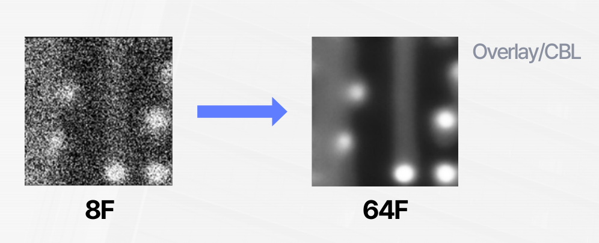
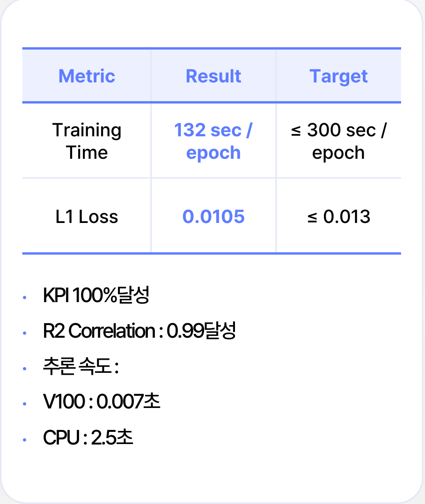

← All projects
SK hynix / Computer Vision
Metrology-Preserving SEM Image Restoration
Research team member · Jan 2025 – Dec 2025
R² = 0.99
0.007 s/image
Problem definition
Low-frame SEM images need restoration without compromising the fine structures used for metrology.
My contributions
Developed a ResNet-based restoration model and proposed Pyramidal and Total Variation losses to preserve fine structural details and edges.
Method overview
Low-frame SEM
ResNet restoration
Restored image
Metrology comparison


Results
R² between measurements from restored and real high-frame SEM images reached 0.99; inference took 0.007 seconds per image.

Technical focus
ResNet · Image restoration · Metrology
Industrial data, internal source code and non-public implementation details are not included.